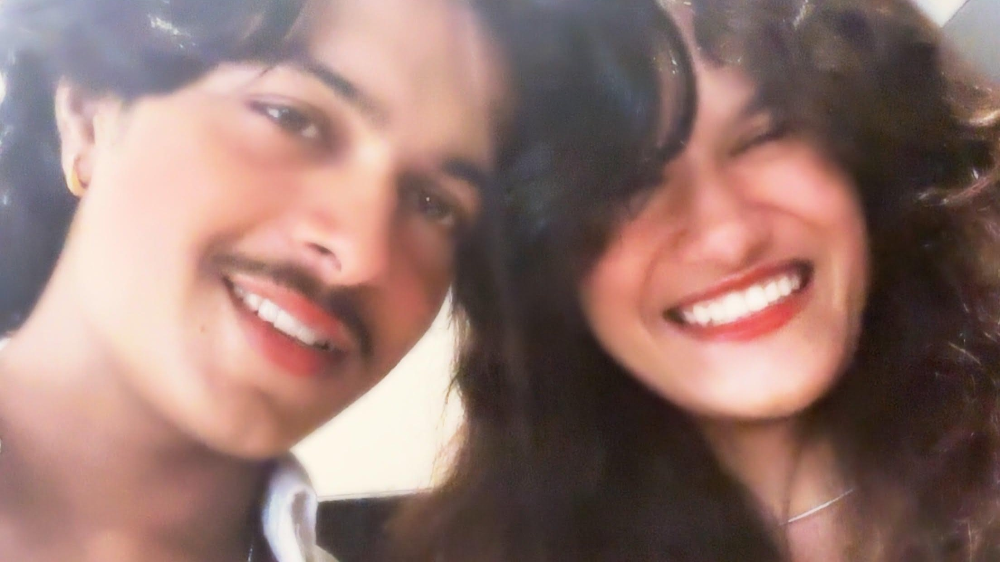
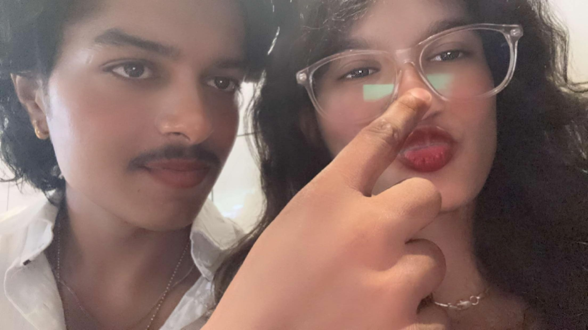

A letter from Kanika
for the boy who started with “helloo” and became my favorite person to ride around with.
It still feels funny that we began with a fake account and conversations full of lies. Somehow, that unserious little “helloo” became something real, soft, playful and completely ours.
I love the actual you: the caring you, the respectful you, the funny and serious you, the biker, the soft guy, and the person who tells me every little thing.
You came from Tonk for fifteen minutes just to see me. You held my hand and never really let go. You cried happy tears when I said yes. I keep all of it with me.
I want you to always know that I am right here for you. Don't ever doubt it or think I would ever let go. I love you so much more than you probably know, my gigluuuu.
What’s next for us

"Songs that sound like us"
open soundtrack ♫
"unfiltered joy • goofballs"
no poses • just laughter ♡"Best birthday present ever. I love you to the moon and back ❤️"